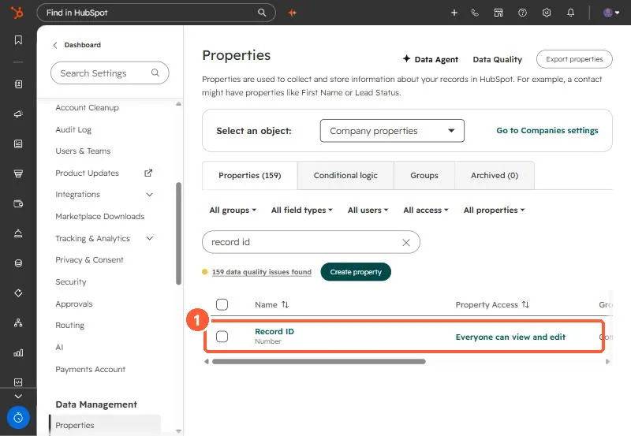
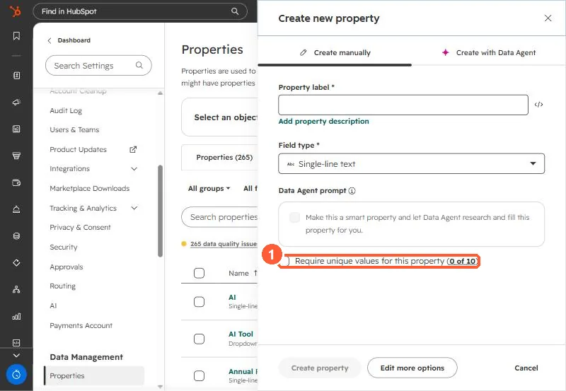

Short answer
If a sync matches companies on an ID that changes, a rename looks like a new company. At an IT services client, the service management system used name-based company IDs, and the cleanup list included duplicate IDs and renamed companies. The option the client's IT team was evaluating was to switch the sync's key to the HubSpot company Record ID, which HubSpot sets and never changes. If you keep an external ID, create its HubSpot property with Require unique values, which HubSpot allows for up to ten properties per object and only when the property is created.
1. What we saw
An IT services client syncs companies, contacts, and deals between their service management system and HubSpot through a middleware tool. In our cleanup calls the problems were:
- Company IDs on the service side were built from company names.
- Renamed companies and duplicate IDs were producing duplicate companies in HubSpot.
- Deals closed on the service side were still open in HubSpot, which inflated the pipeline.
- Test companies in the source system were syncing over.
The client's IT team took the action to evaluate switching the mapping from the service system's company ID to the HubSpot company ID. That decision was still open when I wrote this. Merging the duplicates that already exist is covered in duplicate companies from connector IDs.
2. HubSpot's Record ID does not change
Every HubSpot record has a Record ID set by HubSpot. HubSpot's deduplication article describes using it to match records in imports. Storing it on the source side gives the sync a key that a rename cannot touch.


3. Or make your external ID unique
If you keep the source system's ID, store it in a HubSpot property that requires unique values. HubSpot's rules:
- Up to ten unique value properties per object.
- Set only when you create the property.
- Imports can match on a custom unique value property instead of domain for companies.


Uniqueness stops HubSpot from storing the same ID twice. It does not stop a source system from issuing a new ID after a rename, which is why the key choice matters more.